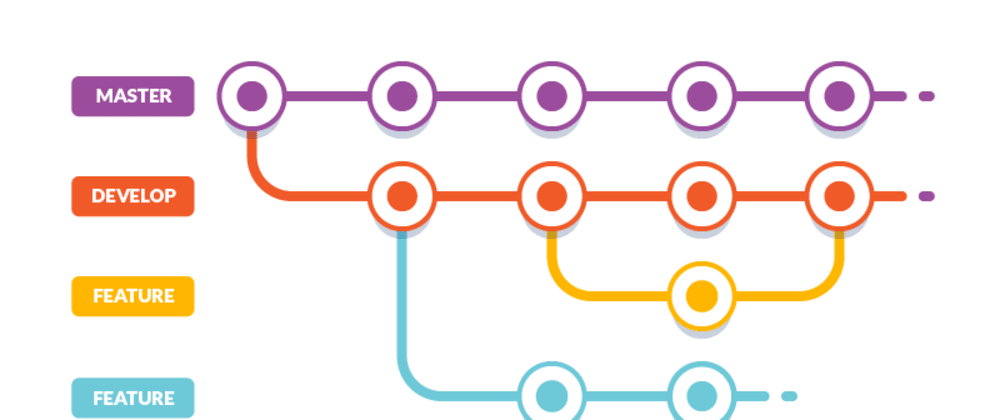

Como gerenciar e atualizar conteúdo em um site estático no GitHub Pages
- Crie uma conta no GitHub;
- Crie um novo repositório;
- Adicione e confirme os arquivos.
Antes de "adicionar" e "confirmar" os seus arquivos, você
precisa entender os estágios de um arquivo que está sendo
rastreado pelo Git:
Estado Confirmado (committed)
Um arquivo é confirmado quando todas as alterações feitas no arquivo foram salvas no repositório local. Os arquivos no estágio confirmado estão prontos para serem enviados para o repositório remoto (no GitHub).
Estado modificado (modified)
Um arquivo no estado modificado tem algumas alterações feitas nele,mas ainda não foi salvo. Isso significa que o estado do arquivo foi alterado de seu estado anterior no estado confirmado.

Estado preparado (staged)
Um arquivo no estado preparado significa que está pronto para ser confirmado. Nesse estado, todas as alterações necessárias foram feitas e o próximo passo é mover o arquivo para o estado de confirmação.
Adicionando arquivos ao Git
Para adicionar arquivos no repositório Git, você precisa utilizar o comando "git add 'nome-do-arquivo", e então commitar os arquivos, utilizando o comando "git commit -m". Dessa forma, os arquivos serão adicionados e as mudanças confirmadas e seu repositório no Git atualizado.

Utilizando as branches
As branches são "caminhos" para fazer alterações nos arquivos. Por exemplo, podemos manter os arquivos originais na branch "main", e criar uma nova branch, que criará uma cópia dos arquivos para realizar alterações teste. Assim caso os testes não funcionem, você pode voltar aos arquivos originais não-modificados.
Quais as melhores práticas para manter o site estático atualizado?
Sempre que houver um jeito de otimizar o site, confirmar com a sua equipe e anotar nos commits as informações sobre as atualizações que você fez nos arquivos.
Procure sempre utilizar imagens em formatos adequados para que o seu site não fique pesado e demore muito para ser carregado pelo navegador. Além disso, uma boa imagem pode trazer mais acessos ao seu site.
Lidando com problemas de versionamento em sites estáticos
Muitos problemas podem surgir durante o desenvolvimento de um projeto, e isso pode afetar as
suas versões. Mas existem algumas formas de lidar com esses problemas:
- Criar branches para testar as alterações;
- Commitar sempre com certeza e com a descrição de tudo o que foi feito;
- Deixar comentários no código também pode ajudar à localizar as alterações.
Problemas de backup em sites estáticos
Um dos problemas que podem acontecer em sites estáticos é uma versão recente dar defeito e não ter como voltar para a versão anterior, assim perdendo muitas alterações. Para evitar isso, é sempre importante testar as alterações em diferentes branches do repositório, ou utilizar uma backup branch, com os arquivos inalterados, ou alterados apenas em uma versão anterios à mais recente do projeto.